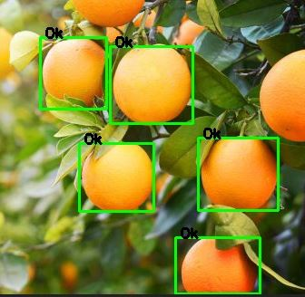
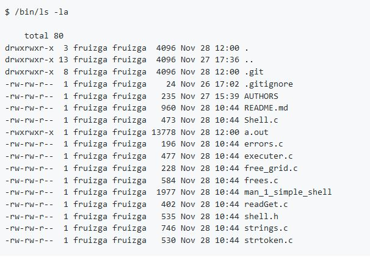

My portfolio

GRANJA-SOFT
Machine learning based solution to select and count fruits and vegetables. This solution was made using Python, Flask, Opencv. HTML, CSS, Javascript.

SIMPLE-SHELL
Worked with a partner to develop a custom unix bash shell to handle and process command line input.

AIRBNB–CLONE
RESTful API for database manipulation and back-end console for object manipulation.